Centrifuge on WebGPU
The v2 factory centrifuge drawn by a TypeGPU / WebGPU renderer from an exported display list, with v2's own runtime driving it and the rotor drawn natively. One self-contained page per theme; without WebGPU it shows the original SVG figure.
Deliverables
Comparison shots
v2 SVG and the deliverable at the same runtime tick (lockstep), with diff heatmaps; numbers in report/README.md. Crops are rendered at device scale 4.

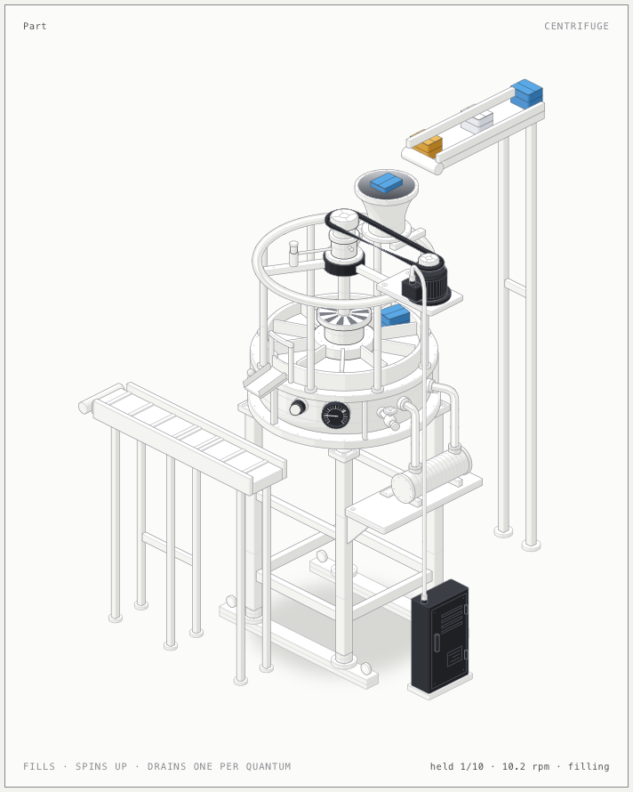

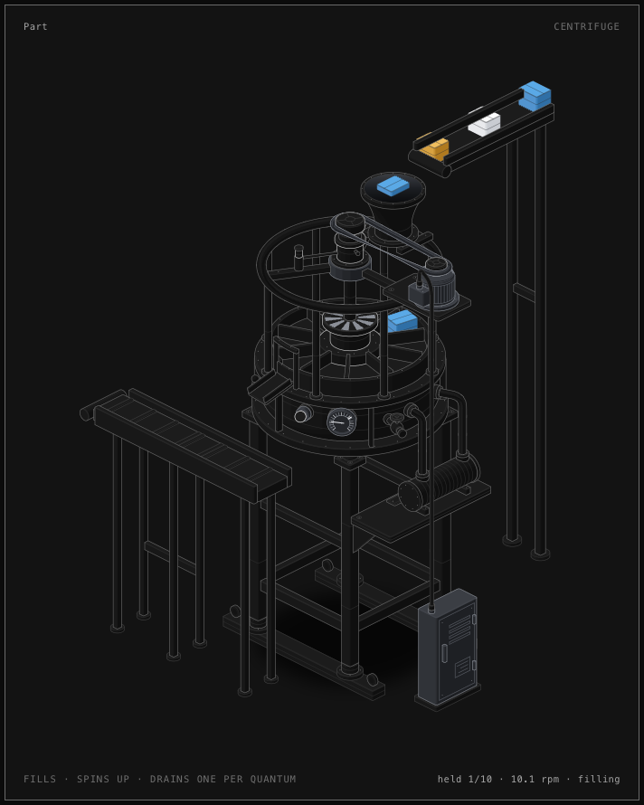

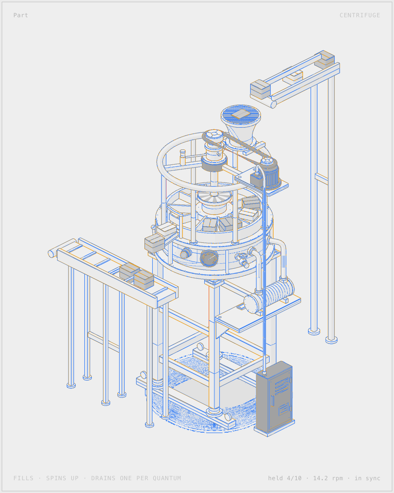


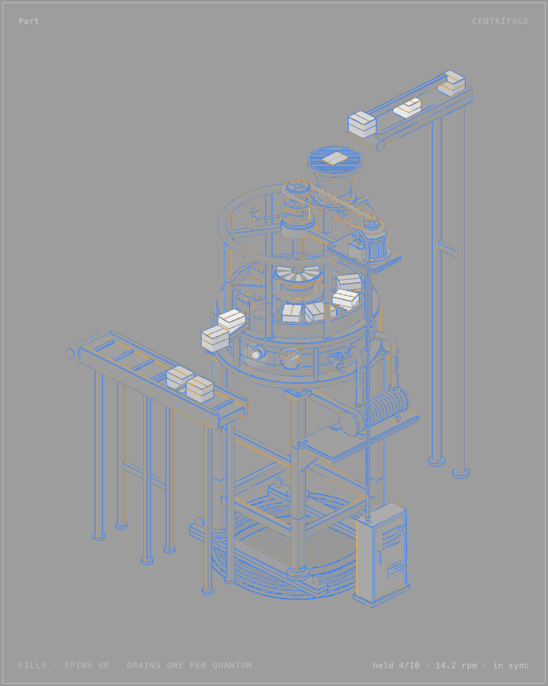


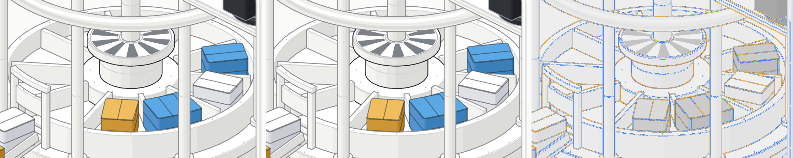


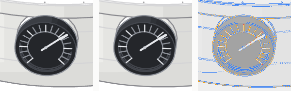


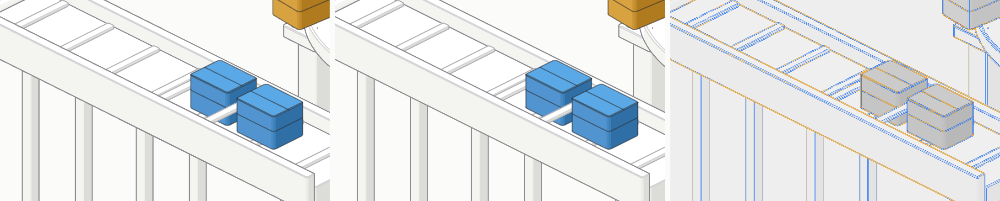


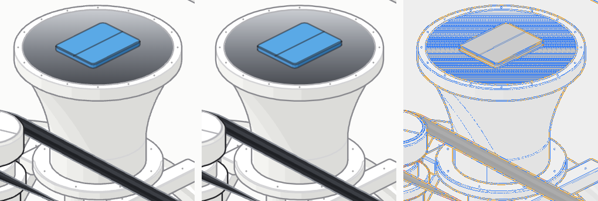


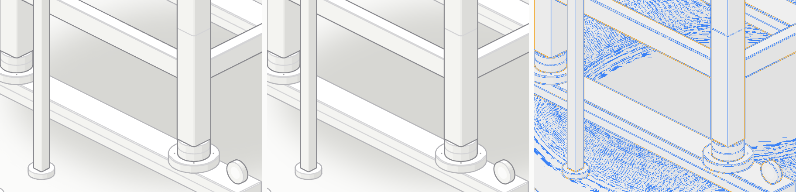


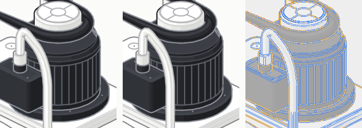


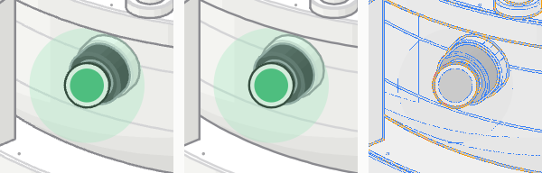


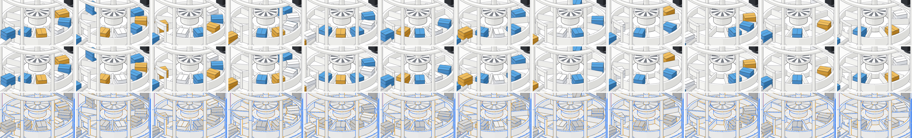

Performance
- Final rows (M4) deliverable vs v2, single + stress10, load
- M5 rows native rotor vs markup path vs SVG
- Fix C2 rows ?native=cpu evaluation
- Fix A GPU rows
- SVG baselines (M6a) dirty-check, layering, frozen slots
Stress pages
- 10 × GPU deliverable iframes
- 10 × v2 SVG iframes
- 10 × v2 SVG, one document
- 10 × GPU, markup path M5, ?native=0
Notes
- Roadmap
- Factory port plan
- Gates thresholds and why
- window.__gpu tool surface, URL parameters
- Display list format
- Spike
- Findings M1 · M2 · M3 · M5 · M6a
- Fix loop A · B · C1 · C2
- Findings M4 packaging